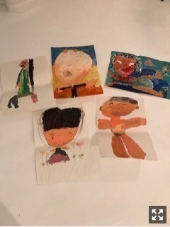

2017/0604Sun暑けり寒けり
ケルティックウーマンの虹の彼方にを
聴くと心が落ち着くので
寝る前によく聴いています♩
よく聴くサントラとその中で1番のお気に入りは、
秒速5センチメートル 「雪の駅」
魔女の宅急便 「木漏れ日の路地」
千と千尋の神隠し 「あの夏へ」
美女と野獣 「bell」
君の名は。 「スパークル」
こんな感じかなぁ。
ぬあー！好きな映画ばかり
久しぶりにゆっくり映画観たいなぁ
皆さんは
どんな曲をどんな時に聴きますか？
いろんな歌に支えられる毎日
こんな気分だからこの曲を聴こう...とか
この曲の歌詞に励まされたとか
1曲1曲が1人1人の人間と同じで深みがあって
違った良さもあっていろんな見方ができる。
たくさんの人に出会う中でたくさんの曲にも出会って
素敵な人生にしていきたいです。
私も乃木坂46として素敵な曲を歌わせていただけて
いるので聴いている人に曲を通して
”何か”を伝えられたらいいなぁ
そう思うとライブにより一層気合いが入っちゃう(*･ω･)ﾉ
髪これくらいにしたい
カニ
arの撮影が楽しすぎてどうしよう。
好きな雑誌に携われることの有り難みを噛み締めて
日々、頑張ります
見てね☆
堀北コンビ
舞台稽古中から本番中まで
毎日ほぼほぼ一緒にいる日奈子
私と同じでかなりの自由人だけど
とにかくまっすぐで優しくて変な日奈子が大好きです
この1ヶ月で前よりも、ぐっと距離が縮まった気がする
同期の中でも日奈子は特に私の悩みや細かい心情までを
汲み取ってくれます。
そんな日奈子にたくさん救われているので
私も日奈子を守っていきたいな
なんてね
大阪公演もうすぐ終わってまうー！
名古屋公演も全力で頑張るで、見とってや！

父の日がもうすぐだそうで
昔私が描いた絵の中に父の絵が1枚混ざっています
どれでしょうかo(^▽^)o
ヒント 飛鳥がこれ、いい！と気に入ってくれた1枚
おやすみおな♩
2017/06/04 21:23
コメント(704)
未央奈ブログ更新ありがとー！
舞台お疲れ様！
秒速5センチメートルめっちゃ見たいの！
凄く面白そう！！！
今度見ます笑
飛鳥が気に入ったやろ？
左上？
またブログ待ってます！
かっちゃん(飛鳥命名)
舞台お疲れ様！
秒速5センチメートルめっちゃ見たいの！
凄く面白そう！！！
今度見ます笑
飛鳥が気に入ったやろ？
左上？
またブログ待ってます！
かっちゃん(飛鳥命名)
みおな
モデルで撮影楽しいって最高じゃーんっ！
いろいろな表情見れるんだね。
モデルで撮影楽しいって最高じゃーんっ！
いろいろな表情見れるんだね。
未央奈は浴衣が似合うなー
黒髪がそうさせるのかな
黒髪がそうさせるのかな
好きな曲は、無口なライオンとかそういう感じの歌かな寂しい時とか聞いてるとジーンとくる感じがいい
みおなブログ更新ありがとう！
あさひなぐの舞台見に行ったよー！
3日の昼公演で結構前の方だったけどみおなの演技にめっちゃ惹かれた！
福岡から来てよかったなーと思った！
まだ舞台は続くけど千秋楽まで怪我のないように頑張ってね！
あさひなぐの舞台見に行ったよー！
3日の昼公演で結構前の方だったけどみおなの演技にめっちゃ惹かれた！
福岡から来てよかったなーと思った！
まだ舞台は続くけど千秋楽まで怪我のないように頑張ってね！
今のまんまの堀さんも可愛いよ！
絶対右上でしょ！笑
未央ちゃん おはよう
ブログありがとう
舞台頑張ってね
ブログありがとう
舞台頑張ってね
未央奈ちゃん更新ありがとー！
乃木坂ちゃんの歌にいつも助けられてる(>_<)
舞台頑張ってね！
乃木坂ちゃんの歌にいつも助けられてる(>_<)
舞台頑張ってね！
みおなちゃん、おはよー
未央奈ブログ更新ありがとー！
肩くらいの長さのボブほんとに似合うかわいい！！♡また見たいな〜
ar未央奈出てるから買うか迷う〜！
肩くらいの長さのボブほんとに似合うかわいい！！♡また見たいな〜
ar未央奈出てるから買うか迷う〜！
みおなちゃん、おはようございます。
舞台お疲れ様です。
僕はいつも乃木坂の曲をよく聴いて、元気をもらっています。みおなちゃん、ありがとうございます。
２枚目の写メのみおなちゃん、めっちゃかわいいです。
みおなちゃん、体調に気をつけて舞台、仕事頑張ってね。
またコメントするね。
舞台お疲れ様です。
僕はいつも乃木坂の曲をよく聴いて、元気をもらっています。みおなちゃん、ありがとうございます。
２枚目の写メのみおなちゃん、めっちゃかわいいです。
みおなちゃん、体調に気をつけて舞台、仕事頑張ってね。
またコメントするね。
未央奈へのコメント連載
乃木坂の曲かな！
悲しみの忘れ方が好き！
頑張ろって思えるから
きぃちゃんとお互い助け合って頑張ってね！
お父さんの絵は上の真ん中かな！笑
ババイ
乃木坂の曲かな！
悲しみの忘れ方が好き！
頑張ろって思えるから
きぃちゃんとお互い助け合って頑張ってね！
お父さんの絵は上の真ん中かな！笑
ババイ
寝る時に最適な曲はenyaさんの曲
心が安らぎよき
飛鳥が好きそうなのは…
一番真ん中のやつとみた
どや？
では、次は私からの問題です
でーでん
未央奈のブログ写真を見るたびに可愛すぎて未央奈が好きになってしまいます。そんな時はどうしたら良いでしょうか
さあーこれは難問
堀さんは解けるかな？
心が安らぎよき
飛鳥が好きそうなのは…
一番真ん中のやつとみた
どや？
では、次は私からの問題です
でーでん
未央奈のブログ写真を見るたびに可愛すぎて未央奈が好きになってしまいます。そんな時はどうしたら良いでしょうか
さあーこれは難問
堀さんは解けるかな？
未央奈ー！！
こないだあさひなぐのライブビューイング見に行ったよ〜！！
めっちゃ良かった！！！
一堂寧々！！！
髪型が初期みたいで
また、髪長い未央奈みたいな〜って
人って髪の長さで雰囲気とか変わるね！！
大阪千秋楽と名古屋、
そして、ライブや握手会頑張ってね！！〜
全ツ、大阪行くかも！！
こないだあさひなぐのライブビューイング見に行ったよ〜！！
めっちゃ良かった！！！
一堂寧々！！！
髪型が初期みたいで
また、髪長い未央奈みたいな〜って
人って髪の長さで雰囲気とか変わるね！！
大阪千秋楽と名古屋、
そして、ライブや握手会頑張ってね！！〜
全ツ、大阪行くかも！！
コメント遅れたけど書くね！朝だから短めだけどブログ更新ありがとー！
堀ちゃんおはよう。
あしゅが気に入ったのなら
右上の悪そうなお父さんが
描かれてるやつかな（笑）
あしゅが気に入ったのなら
右上の悪そうなお父さんが
描かれてるやつかな（笑）
おはよう、未央奈 僕は今日は仕事です。暑いから 体調ととのいて漢方薬飲んで 今日も頑張ろうね。僕の好きな あの夏へ あと 疲れた時 めっちゃボリューム大きくして ガールズルール聞く これ最高やで 今日も暑くなりそうやね 未央奈と鎌倉市にアジサイ見に行きたい。帰りに一緒に白玉ぜんざい食べたい そんな事考えています。未央奈大好きやお
私もそれくらいの髪の長さにしたーい！！
☺︎ひったんより☺︎
☺︎ひったんより☺︎
未央奈ブログ更新ありがとう！
コメント遅くなっちゃった…
サントラ好きなんやねヽ(・∀・)ノ
自分も最近ゆっくり映画見れてないな…
……って！？このいつも以上にきれいな未央奈！
いやされる…
自分には人生を変えてくれた曲があるんだ～
そのときすっごい衝撃受けて今でもその人たち応援してるよ
自分の景色をがらっと変えてくれた人たちなんだ
乃木坂の曲もすごい素敵な曲多いよね
arの未央奈すごい綺麗だよ！
みてて癒されてる(〃ω〃)
きいちゃん結構自由だけど本当に優しくていい子だよね～
未央奈のきいちゃんへの思い、かっこいい
最後に寧々ちゃんでてきたー！ほんっとに舞台カッコよかった！
この問題むっず笑！
ヒントがヒントをなしてないような…笑
あしゅりん不思議なところ気に入るからなぁ（´∀｀）
またブログ更新待ってます
コメント遅くなっちゃった…
サントラ好きなんやねヽ(・∀・)ノ
自分も最近ゆっくり映画見れてないな…
……って！？このいつも以上にきれいな未央奈！
いやされる…
自分には人生を変えてくれた曲があるんだ～
そのときすっごい衝撃受けて今でもその人たち応援してるよ
自分の景色をがらっと変えてくれた人たちなんだ
乃木坂の曲もすごい素敵な曲多いよね
arの未央奈すごい綺麗だよ！
みてて癒されてる(〃ω〃)
きいちゃん結構自由だけど本当に優しくていい子だよね～
未央奈のきいちゃんへの思い、かっこいい
最後に寧々ちゃんでてきたー！ほんっとに舞台カッコよかった！
この問題むっず笑！
ヒントがヒントをなしてないような…笑
あしゅりん不思議なところ気に入るからなぁ（´∀｀）
またブログ更新待ってます
未央奈ちゃん♡
ブログ更新ありゃと♡
うちは学校から帰ったあととか､勉強してるときとかに音楽きくかなぁ!!乃木坂だったらあの教室と裸足でSummerがすきー♡ほかのアーティストだったらfumikaさんのbeautifulが好きです!!
髪の毛そのくらいがすっごくかわいい♡でも今の未央奈ちゃんもかわいいよ♡
お父さんの絵は上の1番右かなぁ??うちが1番つぼったのでこれにしました!!笑
ブログ更新ありゃと♡
うちは学校から帰ったあととか､勉強してるときとかに音楽きくかなぁ!!乃木坂だったらあの教室と裸足でSummerがすきー♡ほかのアーティストだったらfumikaさんのbeautifulが好きです!!
髪の毛そのくらいがすっごくかわいい♡でも今の未央奈ちゃんもかわいいよ♡
お父さんの絵は上の1番右かなぁ??うちが1番つぼったのでこれにしました!!笑
6/3の昼公演行きましたよ！原作のキャラの雰囲気凄くまとってました。舞台のみおなを初めて観たので、ギャップにおったまげました。楽しい舞台をありがとう。大阪のおいしいものを腹一杯食べて行ってくださいね。千秋楽頑張って！
おはよー！
ブログありがとう✨
好きな曲はエリック・クラプトンの『Change the world』かな♪
洋楽が好き～よかったら聴いてみて♪
お父さんの絵はどれだろ(笑)わかんない〜
金曜日やっとあさひなぐ見に行ける！名古屋初日！４階席(笑)だけど、応援するね✨
ブログありがとう✨
好きな曲はエリック・クラプトンの『Change the world』かな♪
洋楽が好き～よかったら聴いてみて♪
お父さんの絵はどれだろ(笑)わかんない〜
金曜日やっとあさひなぐ見に行ける！名古屋初日！４階席(笑)だけど、応援するね✨
げっちゅです。
あさひなぐっ。
舞台観ました。
やはり未央奈は舞台映えするなあ。
存在感。素敵です。
あ、またいつか、シフト？の件、出来たらいいな。
身体、気を付けて。応援してるからね？
あさひなぐっ。
舞台観ました。
やはり未央奈は舞台映えするなあ。
存在感。素敵です。
あ、またいつか、シフト？の件、出来たらいいな。
身体、気を付けて。応援してるからね？
未央奈ちゃんブログありがとー。
日奈子とこれからも仲良く、そして助け合って行ってください！
2人を見てると心がやすらぎます…(´-ω-｀)))
2人を見てると心がやすらぎます…(´-ω-｀)))
おはようございます‼︎
忘れないうちに、まずは未央奈クイズに回答しておこう(笑)。
未央奈のお父さんは、右上段の絵かな‼︎
理由は…絵全体から醸し出される影のある雰囲気が、飛鳥ちゃんが好きそうだなあ、と(笑)。
さて、音楽の話。
自分も毎日いろいろ波がある中で、音楽に相当助けられてます。
精神的にしんどい時は、定番だけど、ミスチルをよく聴くかな。
とにかく歌詞が秀逸なんです‼︎
『蘇生』『GIFT』『HERO』『名も無き詩』『終わりなき旅』、勇気づけられる曲はいっぱいあるけど…
つらい時期に一番よく聴いたのは、『I'll be』かな。
ここから遠く離れた場所で、毎日無力感や孤独感に包まれていた時、毎日この曲を聴いて頑張ろうって思ってました。
自分にとっての『チカラウタ』ですね‼︎
オリジナルバージョンよりも、2010年のap bank fesの時のアレンジが好き♪
ミスチルといえば、たしか日奈子ちゃんも大好きでしたよね♪
もしかすると、彼女ならap bank fesのDVDか何かを持っているかもしれません。
興味があれば是非是非♪
ああ、歌のことになると、ついつい長くなる(笑)。
もう少し書きたいことがあるので、それはまた後ほど。
ではでは、またあとで♪
忘れないうちに、まずは未央奈クイズに回答しておこう(笑)。
未央奈のお父さんは、右上段の絵かな‼︎
理由は…絵全体から醸し出される影のある雰囲気が、飛鳥ちゃんが好きそうだなあ、と(笑)。
さて、音楽の話。
自分も毎日いろいろ波がある中で、音楽に相当助けられてます。
精神的にしんどい時は、定番だけど、ミスチルをよく聴くかな。
とにかく歌詞が秀逸なんです‼︎
『蘇生』『GIFT』『HERO』『名も無き詩』『終わりなき旅』、勇気づけられる曲はいっぱいあるけど…
つらい時期に一番よく聴いたのは、『I'll be』かな。
ここから遠く離れた場所で、毎日無力感や孤独感に包まれていた時、毎日この曲を聴いて頑張ろうって思ってました。
自分にとっての『チカラウタ』ですね‼︎
オリジナルバージョンよりも、2010年のap bank fesの時のアレンジが好き♪
ミスチルといえば、たしか日奈子ちゃんも大好きでしたよね♪
もしかすると、彼女ならap bank fesのDVDか何かを持っているかもしれません。
興味があれば是非是非♪
ああ、歌のことになると、ついつい長くなる(笑)。
もう少し書きたいことがあるので、それはまた後ほど。
ではでは、またあとで♪
自分がよく聴く歌といえばやっぱ乃木坂なんだけど、クラシック好きだったからサントラも持ってるよ
それこそ千と千尋の神隠しも持ってるし、ジブリでいえばとなりのトトロとか、ハウルの動く城とか、風立ちぬとか色々ね
千と千尋の神隠しは最初に流れるあの夏へも良いけど、個人的にはクライマックスで流れる、ふたたびが好きかな（ハクが迎えに来るところね）
トトロなら五月の村、ハウルなら人生のメリーゴーランド、オススメはいっぱいあるけど、1番はジブリじゃないけど、細田守監督のサマーウォーズの、the summer wars が元気でるよ（よくバラエティでも使われてる曲だから聴いたことあるかも）絶対聞いてみて！
聞いたらブログで感想とか書いてくれたら嬉しい！
次握手会行く時俺もオススメ聞くから教えてね
それこそ千と千尋の神隠しも持ってるし、ジブリでいえばとなりのトトロとか、ハウルの動く城とか、風立ちぬとか色々ね
千と千尋の神隠しは最初に流れるあの夏へも良いけど、個人的にはクライマックスで流れる、ふたたびが好きかな（ハクが迎えに来るところね）
トトロなら五月の村、ハウルなら人生のメリーゴーランド、オススメはいっぱいあるけど、1番はジブリじゃないけど、細田守監督のサマーウォーズの、the summer wars が元気でるよ（よくバラエティでも使われてる曲だから聴いたことあるかも）絶対聞いてみて！
聞いたらブログで感想とか書いてくれたら嬉しい！
次握手会行く時俺もオススメ聞くから教えてね
ホーリー、おはよう
今日はいい天気だね！
飛鳥ちゃんが選んだ絵は、前列右の絵かな？
カッコイイ曲を良く聞くよ！
例えば、ホワイトジャムの咲かないで
アレキサンドロスの渡り鳥
なんか、カッコイイ！
そして、福士蒼汰さんと小松菜奈さんのMVのバックナンバーのハッピーエンドは最高に好き！
映像と歌がスゲー合ってて大好き！
ハッピーエンドは前もコメントした覚えがあるな！
それから、俺、今最下位の東京ヤクルトスワローズのファンだから、ホワイトベリーの夏祭り！
神宮球場で応援する時にライトスタンドで歌うよ！
盛り上がるんだな！
点が入った時の東京音頭を歌うのが大好き！
但し、今年は弱すぎて、点があまり入らないから、
最悪だ！ヤクルト頑張れ！
名古屋のあさひなぐも楽しんで演じてね！
それでは健康第一で！
信州のミッキイでした！
今日はいい天気だね！
飛鳥ちゃんが選んだ絵は、前列右の絵かな？
カッコイイ曲を良く聞くよ！
例えば、ホワイトジャムの咲かないで
アレキサンドロスの渡り鳥
なんか、カッコイイ！
そして、福士蒼汰さんと小松菜奈さんのMVのバックナンバーのハッピーエンドは最高に好き！
映像と歌がスゲー合ってて大好き！
ハッピーエンドは前もコメントした覚えがあるな！
それから、俺、今最下位の東京ヤクルトスワローズのファンだから、ホワイトベリーの夏祭り！
神宮球場で応援する時にライトスタンドで歌うよ！
盛り上がるんだな！
点が入った時の東京音頭を歌うのが大好き！
但し、今年は弱すぎて、点があまり入らないから、
最悪だ！ヤクルト頑張れ！
名古屋のあさひなぐも楽しんで演じてね！
それでは健康第一で！
信州のミッキイでした！
あさひなぐがんばって！！
今日もかわいい
今日もかわいい
舞台お疲れ様です(^-^)
自分は名古屋観に行きます
楽しみです！
歌もダンスもラジオもモデルも
頑張ってください^ ^ 応援してます‼︎‼︎
自分は名古屋観に行きます
楽しみです！
歌もダンスもラジオもモデルも
頑張ってください^ ^ 応援してます‼︎‼︎
未央奈ブログ更新ありがとうございます！
新曲毎日聞いてるよ！！！
ほんとに好きです(/∇＼*)｡o○♡
新曲毎日聞いてるよ！！！
ほんとに好きです(/∇＼*)｡o○♡
いつもありがとうございます。
「当たり障りのない話」はとても女の子っぽい曲ですね。
自分はおっさんですが聴いていてドキドキします。
初期の乃木坂の匂いを感じさせる、良い曲だと思います。
「当たり障りのない話」はとても女の子っぽい曲ですね。
自分はおっさんですが聴いていてドキドキします。
初期の乃木坂の匂いを感じさせる、良い曲だと思います。
堀さんへ
幼稚園の年長組のとき、父の日が日曜参観なので、当日渡すものの準備をしてました。
黄色い画用紙の右側に、自分の右手に墨を塗ってぺたりと手型を付けます。上には既に先生のマジックで「ちいさなて」と書かれてあり、左側に「おおきなて」とあって、当日父に手型を捺してもらうのです。
もう一つは、紙粘土で灰皿を。先生の指導で、灰皿の縁にタバコを立て掛けられるように、指でくぼみをつけておきます。私の色塗りは、側面を青、底は黒にしました。
父は滅多にタバコを吸わないのですが、父の日を境にスパスパしてる姿をよく見るようになりました。
数年経ってこの灰皿を見たとき、かなり使い込まれてて驚いたのですが、そういえば、テレビで明石家さんまさんが宝物として、娘が幼稚園で作ってプレゼントされた紙粘土の灰皿を披露してましたね。
では一句。上の句は「くろはえ」とお読みください。
黒南風にバツトを振りし君の朝
幼稚園の年長組のとき、父の日が日曜参観なので、当日渡すものの準備をしてました。
黄色い画用紙の右側に、自分の右手に墨を塗ってぺたりと手型を付けます。上には既に先生のマジックで「ちいさなて」と書かれてあり、左側に「おおきなて」とあって、当日父に手型を捺してもらうのです。
もう一つは、紙粘土で灰皿を。先生の指導で、灰皿の縁にタバコを立て掛けられるように、指でくぼみをつけておきます。私の色塗りは、側面を青、底は黒にしました。
父は滅多にタバコを吸わないのですが、父の日を境にスパスパしてる姿をよく見るようになりました。
数年経ってこの灰皿を見たとき、かなり使い込まれてて驚いたのですが、そういえば、テレビで明石家さんまさんが宝物として、娘が幼稚園で作ってプレゼントされた紙粘土の灰皿を披露してましたね。
では一句。上の句は「くろはえ」とお読みください。
黒南風にバツトを振りし君の朝
オススメのサントラは!!! ジブリの久石さんも良いし、「ジョン・ウィリアムズ」の作品のスコアも素晴らしいですよ!!!(＾O)＝3
「スター・ウォーズ、新たなる希望、帝国の逆襲、ジェダイの帰還、オリジナル・トリロジー」のサウンドトラックと「フォースの覚醒」のサントラも、テーマ曲とキャラクターテーマ曲が感情的で「ヨーダのテーマ」とか光と闇の９００年間を生きたヨーダらしく、悲哀を感じさせるような、静かで深い希望的なメロディで心揺さぶるし・・・フォースの覚醒の「レイのテーマ」も強くて冒険的な感じで「フィンのテーマ」は、孤独な内面を表現したような奥深さがあるし・・・。(ノ＞＜)ノ
「ローグ・ワン・スターウォーズ」のサントラもとても、感動的な雰囲気で聴き応えあるから好き過ぎる・・・。(>_<)オススメですよ(^O^)/～
他には「ロード・オブ・ザ・リング」と「ホビット」のそれぞれサントラも、
映画の世界観を想像させる素晴らしいスコアばかりで、キャラやシーンを思い出して胸が熱くなるような、
とにかく心に届きます・・・。(;_;)どれも傑作です(^O^)
今週も体調に気をつけて、
舞台と握手会頑張って下さい・・・・・。＼＾o＾／
「スター・ウォーズ、新たなる希望、帝国の逆襲、ジェダイの帰還、オリジナル・トリロジー」のサウンドトラックと「フォースの覚醒」のサントラも、テーマ曲とキャラクターテーマ曲が感情的で「ヨーダのテーマ」とか光と闇の９００年間を生きたヨーダらしく、悲哀を感じさせるような、静かで深い希望的なメロディで心揺さぶるし・・・フォースの覚醒の「レイのテーマ」も強くて冒険的な感じで「フィンのテーマ」は、孤独な内面を表現したような奥深さがあるし・・・。(ノ＞＜)ノ
「ローグ・ワン・スターウォーズ」のサントラもとても、感動的な雰囲気で聴き応えあるから好き過ぎる・・・。(>_<)オススメですよ(^O^)/～
他には「ロード・オブ・ザ・リング」と「ホビット」のそれぞれサントラも、
映画の世界観を想像させる素晴らしいスコアばかりで、キャラやシーンを思い出して胸が熱くなるような、
とにかく心に届きます・・・。(;_;)どれも傑作です(^O^)
今週も体調に気をつけて、
舞台と握手会頑張って下さい・・・・・。＼＾o＾／
未央奈！未央奈！
聞いてよ！
愛知にジブリパークできるよ！
トトロの森とか再現するんだって！！
めちゃくちゃ楽しみだよね！
聞いてよ！
愛知にジブリパークできるよ！
トトロの森とか再現するんだって！！
めちゃくちゃ楽しみだよね！
未央奈ちゃん、こんにちは。
未央奈ちゃんのブログ、モバメ、歌声などなどで元気と癒しを沢山もらっています。ありがとう。
あさひなぐ大阪公演、いよいよ今日で最後だね。良い体調で過ごしてください。
乃木坂46とcuteでsmartな未央奈ちゃんを応援しています。
未央奈ちゃんのブログ、モバメ、歌声などなどで元気と癒しを沢山もらっています。ありがとう。
あさひなぐ大阪公演、いよいよ今日で最後だね。良い体調で過ごしてください。
乃木坂46とcuteでsmartな未央奈ちゃんを応援しています。
みおな！更新ありがとう
がんばれ！
がんばれ！
今はスカイダイビングを目覚まし曲にしています!!
俄然やる気が出ます♪♪
髪はセミロングにすると、ぐっと大人っぽいですよ★
掘北コンビもイイネ◎
よく舞台で仲良くなる話を聞きますが、仲良く頑張って下さい☆)^o^(
絵は、真ん中がお父さんで、左上がおばあちゃん、右上はお母さんで、下二人がお友達かな～???笑
俄然やる気が出ます♪♪
髪はセミロングにすると、ぐっと大人っぽいですよ★
掘北コンビもイイネ◎
よく舞台で仲良くなる話を聞きますが、仲良く頑張って下さい☆)^o^(
絵は、真ん中がお父さんで、左上がおばあちゃん、右上はお母さんで、下二人がお友達かな～???笑
みおな、こんにちは❗❗
ブログ、ありがとね❗
舞台の期間中なのに、よく更新できるよね❗❗
今回のブログで、何回目だっけ・・・
みおな、やっぱり要領がいいんだね❗（笑）
さすがだよ❗❗
大阪公演、今日で終わりか・・・
なんか、あっという間だね・・・
夏みたいだな・・・
始まったと思ったら、あっという間におわっちゃう・・・
今年は特別な夏にしたいな・・・
２枚目の写メ、かわいいね❗❗
ほんのりチークと、カール気味の髪、長さもちょうどいいよ❗❗
先のとがった口も（笑）、すごくかわいい❗❗
arはね、とりあえず、みおなが花園神社で、何をお願いしたか、それが気になる❗❗（笑）
そこかよ❗みたいな❗❗（笑）
まぁ、それも気になるけど、どんな装いで載るのか、それが楽しみだな❗❗（本気❗）
朝から、しゃぶしゃぶだけしか食べなかったりして、摂生してたのかな❓（笑）
それは関係ない❓（笑）
とにかく、楽しみにしてるね❗❗（笑）
堀北コンビ、一番好きだな・・・
見てて、二人本当に気が合うんだな、って言うのが、よくわかるよ❗❗
それにこっちも楽しい❗（笑）
みおなも、ひなこと絡んでて楽しいでしょ❓
二人の楽しい雰囲気がこっちにも派生してるんだよ、きっと❗❗
これからも、コントみたいな（❗笑）二人の絡み、よろしくね❗❗（笑）
じゃ、大阪ラスト、行ってらっしゃい❗❗（笑）
ブログ、ありがとね❗
舞台の期間中なのに、よく更新できるよね❗❗
今回のブログで、何回目だっけ・・・
みおな、やっぱり要領がいいんだね❗（笑）
さすがだよ❗❗
大阪公演、今日で終わりか・・・
なんか、あっという間だね・・・
夏みたいだな・・・
始まったと思ったら、あっという間におわっちゃう・・・
今年は特別な夏にしたいな・・・
２枚目の写メ、かわいいね❗❗
ほんのりチークと、カール気味の髪、長さもちょうどいいよ❗❗
先のとがった口も（笑）、すごくかわいい❗❗
arはね、とりあえず、みおなが花園神社で、何をお願いしたか、それが気になる❗❗（笑）
そこかよ❗みたいな❗❗（笑）
まぁ、それも気になるけど、どんな装いで載るのか、それが楽しみだな❗❗（本気❗）
朝から、しゃぶしゃぶだけしか食べなかったりして、摂生してたのかな❓（笑）
それは関係ない❓（笑）
とにかく、楽しみにしてるね❗❗（笑）
堀北コンビ、一番好きだな・・・
見てて、二人本当に気が合うんだな、って言うのが、よくわかるよ❗❗
それにこっちも楽しい❗（笑）
みおなも、ひなこと絡んでて楽しいでしょ❓
二人の楽しい雰囲気がこっちにも派生してるんだよ、きっと❗❗
これからも、コントみたいな（❗笑）二人の絡み、よろしくね❗❗（笑）
じゃ、大阪ラスト、行ってらっしゃい❗❗（笑）
僕の好きな曲は、もちろん乃木坂の曲全部だけれど、乃木坂が好きになる前にとても好きだったEXILEの「HERO」です。ATSUSHIの歌声が好きなので、特にこの一曲が大好きです。
受験生だから、休憩時に聴く曲って大きな効果を発揮すると思う。最近は乃木坂の曲ばっかり聴いてるけど、みおなが伝えたい「何か」は伝わってると思う。乃木坂の曲で癒され、頑張ろうと思える。ありがとう！
一般人の僕がみおなに伝えられる事は少ないけど応援しています。
お父さんの絵は上の中央ですか?
受験生だから、休憩時に聴く曲って大きな効果を発揮すると思う。最近は乃木坂の曲ばっかり聴いてるけど、みおなが伝えたい「何か」は伝わってると思う。乃木坂の曲で癒され、頑張ろうと思える。ありがとう！
一般人の僕がみおなに伝えられる事は少ないけど応援しています。
お父さんの絵は上の中央ですか?
ほちゃー
舞台連日お疲れ様ーー！
私はバレッタ聞くとがんばろーって思える、私の中ですごい大事な曲ー( ^ω^ )
舞台連日お疲れ様ーー！
私はバレッタ聞くとがんばろーって思える、私の中ですごい大事な曲ー( ^ω^ )
こんにちは。
41歳二児の父、走ることと歌うことが大好きなサラリーマン、埼玉のボインキラーです。755ではt-kenです。
う～ん。ヒント出されてもわからない。左の手前側かな。
きいちゃんとの関係良いね。この前の二人の写真、最強。透明感 清潔感
清潔感
大阪公演あと少しだね。自分も午後の仕事頑張ります
41歳二児の父、走ることと歌うことが大好きなサラリーマン、埼玉のボインキラーです。755ではt-kenです。
う～ん。ヒント出されてもわからない。左の手前側かな。
きいちゃんとの関係良いね。この前の二人の写真、最強。透明感
大阪公演あと少しだね。自分も午後の仕事頑張ります
ケルティックウーマンが好きなら、
エンヤとも相性があうと思います。
エンヤとも相性があうと思います。
未央奈 おはよう！
舞台や美味しい食べ物で大阪を満喫してますか？
忙しくてそれどころじゃないかな？
温度差が有るから喉きおつけね。
ちなみに自分は今、ガラガラ声です。
今日が終われば名古屋、長かったのかな？短ったのかな？
仕事が忙しくて行けなかったよー。東京追加無いのかな？
歌、曲って凄いパワーを持ってるよね。歌、曲を聴いて泣けたり、ワーーとみんなと騒げたり、スーーと寝れたり、背中をそっと押してくれたり。
「ワタボコリ」一杯聴いたよ。ネガティヴ、ポジティブとかとか関係無く、いい曲だね。でだしが一番好き。最近、気づいたら歌ってる。ライブで早く聴きたい！多分、一緒に歌ってると思う。
心友いいなぁー。
舞台が終わったら、夢に向かって進んだ 未央奈 に会えるのが楽しみ！
お互い頑張ろねー笑顔で！
舞台や美味しい食べ物で大阪を満喫してますか？
忙しくてそれどころじゃないかな？
温度差が有るから喉きおつけね。
ちなみに自分は今、ガラガラ声です。
今日が終われば名古屋、長かったのかな？短ったのかな？
仕事が忙しくて行けなかったよー。東京追加無いのかな？
歌、曲って凄いパワーを持ってるよね。歌、曲を聴いて泣けたり、ワーーとみんなと騒げたり、スーーと寝れたり、背中をそっと押してくれたり。
「ワタボコリ」一杯聴いたよ。ネガティヴ、ポジティブとかとか関係無く、いい曲だね。でだしが一番好き。最近、気づいたら歌ってる。ライブで早く聴きたい！多分、一緒に歌ってると思う。
心友いいなぁー。
舞台が終わったら、夢に向かって進んだ 未央奈 に会えるのが楽しみ！
お互い頑張ろねー笑顔で！
ブログありがとう！
大阪公演お疲れ様！
大阪公演お疲れ様！
ケルティック・ウーマンの曲、癒されるよね☆
俺は、原点に戻りたいときにバラードを聴いたり、
「負けないぞ！」って気合い入れるときにロックの曲を聴いたりしてる(^-^)
俺は、原点に戻りたいときにバラードを聴いたり、
「負けないぞ！」って気合い入れるときにロックの曲を聴いたりしてる(^-^)
未央奈ー♡大好き♡ブログまめに更新嬉しい♡
更新あざす！！


一堂カッコよかった！
最初に声聞いた時、こわ〜って思った‼︎
自分が一堂と対面したら、目なんて見れないなと思った‼︎
いろんな、堀さん見たいな‼︎